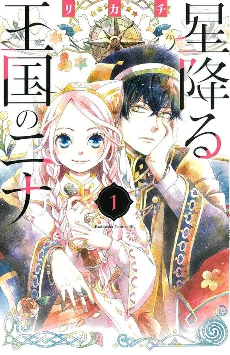

Nina the Starry Bride
星降る王国のニナ
Nina, an orphan with blue eyes, is made to impersonate a dead princess by a mysterious prince.
After the anime, read the manga from Chapter 25.
7.2AniList score
—Animeter, no votes yet
12episodes
Rate it or report where you stopped
Is it worth pushing through?
Built from what visitors report across all 12 episodes.
Loading reports…Checking what other people said about this one.
Sign in above with your email to add your report.
More like Nina the Starry Bride
Unclear7.3
Betrothed to My Sister's Ex Manga Ch. 548.0
Manga Ch. 548.0
 Unclear8.1
Unclear8.1
 Manga Vol. 27.2
Manga Vol. 27.2
 Manga Ch. 388.3
Manga Ch. 388.3
 Manga Ch. 268.3
Manga Ch. 268.3
 Manga Ch. 407.1
Manga Ch. 407.1
 Original8.3
Original8.3
Film8.3
Wolf Children
Unclear7.5
Golden Time Manga Ch. 819.1
Manga Ch. 819.1
 Unclear7.6
Unclear7.6